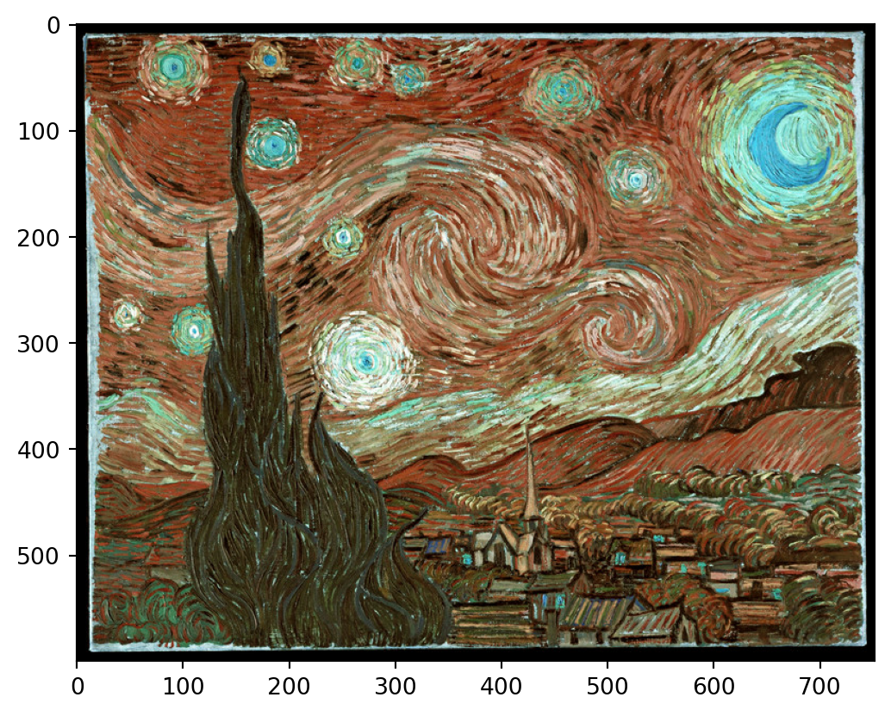
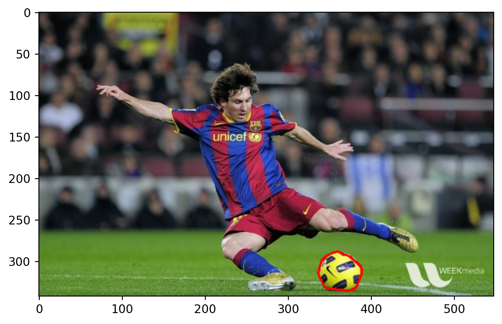
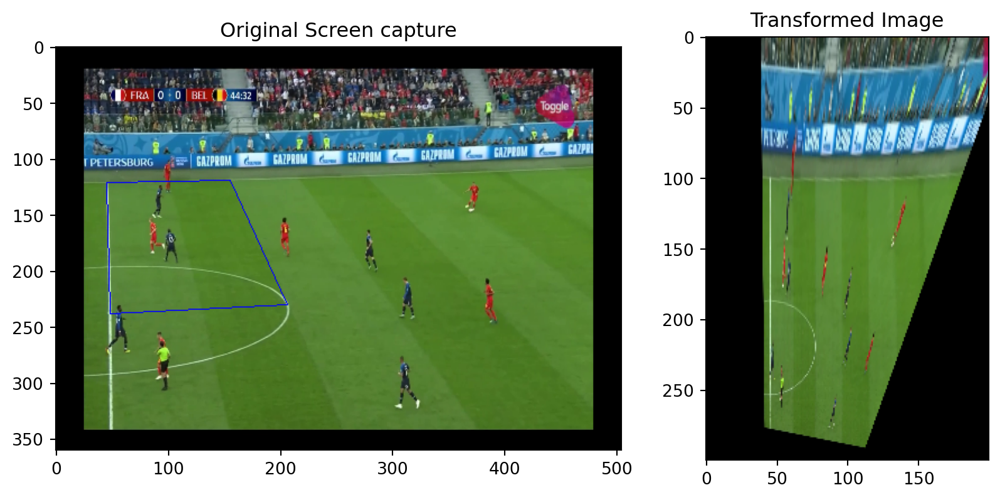

9 Computer Vision
9.1 Introduction
Data science has a number of applications in computer vision. These have increased in number and accuray in the past 5 years or so due to the advancements in deep learning (both theory and computational feasibility). In this topic, we shall experiment with some of the applications, utilising existing deep learning models.
Here is a short list of applications of computer vision techniques:
- Optical Character Recognition: Reading handwritten documents, car license plate numbers from images.
- Surveillance and traffic monitoring: Monitoring cars on a highway, tracking humans in security cameras for suspicious activity.
- Machine inspection: Automatically detecting damage on components manufactured, such as silicon wafers, etc.
Here is an old page with a more comprehensive list of applications.
In computer vision, the goal is to get a computer to perceive the world as we see it. This is not easy even for us to do - we can get fooled by optical illusions such as the ones below.
In general though, for us, it is possible to do things like pick out faces that we recognise from a photograph of a crowd. But how can we get a computer to do it?
9.2 Image Processing
Reading Images
The opencv package contains routines for reading images into Python. Images are typically represented using the RGB colorspace. Each image is a (W x H x 3) numpy array. Each layer corresponds to one of these channels. However, opencv uses the order BGR. When you use plt.imshow to plot an image that has been read in using opencv, take note of this, as it might not appear “correct”.
starry_night = cv2.imread('data/starry_night.jpg')
# Reversed (not correct)
plt.imshow(starry_night);
#plt.imshow(starry_night[:, :, 0], cmap='Blues');
The following code should open up the starry night image in a new window on your computer.
# plotting with cv2.imshow returns the correct colours.
cv2.namedWindow('dst_rt', cv2.WINDOW_NORMAL)
cv2.resizeWindow('dst_rt', starry_night.shape[1], starry_night.shape[0])
# hit "q" to close window (do not hit the "X" button)
cv2.imshow('dst_rt', starry_night)
cv2.waitKey(0)
cv2.destroyAllWindows()9.3 Working with Masks
When working in a computer vision project, we often need to extract parts of the image to work with, or to modify. This is typically done using masks. Masks are black-and-white images that identify the foreground (white) and the background (black).
Let us work with the following image of Lionel Messi, and see how we can use masks and colour selection to outline the ball.

Our first task is to read the data into Python, and use a colour picker to identify the colour of the ball. The following website provides a useful tool for us to upload an image, and isolate the HSV (Hue-Saturation-Value) representaion of the colour we wish to pick out:
https://redketchup.io/color-picker
Using this website, we learn that the RGB representation we want is RGB=(244,251,95). We the convert this to HSV using a colour conversion function.
array([[[ 31, 158, 251]]], dtype=uint8)Compare the black-and-white image below with the original one. The white regions below correspond to yellow coloured sections in the original image. The white pixels take the value 255, while the black pixels are 0. We are going to modify the numpy array corresponding to this mask to correspond to only the ball.
Take note of where the origin is: at the top-left corner. The x-values increase to the right from there; y-values increase downward from there.
The next section of code identifies contours around the ball region, computes the convex hull around these points and then draws this on the original image.
#im2, contours= cv2.findContours(mask1, cv2.RETR_TREE, cv2.CHAIN_APPROX_SIMPLE)
contours, _ = cv2.findContours(mask1, cv2.RETR_EXTERNAL, cv2.CHAIN_APPROX_SIMPLE)
largest_contour = max(contours, key=cv2.contourArea)
hull = cv2.convexHull(largest_contour)
cv2.drawContours(messi, [hull], -1, (0, 0, 255), thickness=2)
plt.imshow(cv2.cvtColor(messi, cv2.COLOR_BGR2RGB));
9.4 Modifying Perspective of Images
There are situations where we need to transform the perspective of an image, in order to identify objects better, or to perform OCR better. To do so, we need to provide a map of four points from the original image (in the same plane), and the corresponding four points in the transformed image. Here are a couple of examples.
Example 9.1 (Example 1: Sudoku)
Here is an example of transforming the perspective.
Example 9.2 (Example 2: Football)
football1 = cv2.imread('data/football1.png')
pts1 = np.float32([[45,121],[48,238],[206,230], [155,118]])
pts2 = np.float32([[45,100], [45,220], [77,220], [77,100]])
M = cv2.getPerspectiveTransform(pts1,pts2)
dst = cv2.warpPerspective(football1, M, (504, 360))
pts = np.array([[45,121],[48,238],[206,230], [155,119]], np.int32)
pts = pts.reshape((-1,1,2))
img2 = cv2.polylines(football1, [pts], True, (255, 0, 0), 1 )fig = plt.figure(figsize=(10, 5))
gs = fig.add_gridspec(1, 2, width_ratios=[2, 1])
# First subplot
ax1 = fig.add_subplot(gs[0])
ax1.imshow(cv2.cvtColor(img2, cv2.COLOR_BGR2RGB))
ax1.set_title('Original Screen capture')
# Second subplot
ax2 = fig.add_subplot(gs[1])
ax2.imshow(cv2.cvtColor(dst[:300, :200], cv2.COLOR_BGR2RGB))
ax2.set_title('Transformed Image');
9.5 Computer Vision Tasks
Just as we observed there are numerous NLP tasks, the field of computer vision has made great strides in several tasks. Among them are:
- Object detection
- Object classification
- Object tracking
- Face detection
- Pose estimation
- QR/Bar code detection
- Text detection/extraction
Almost all the models that perform well in the above tasks are deep learning models. In the next few sections, we are going to practice running/configuring some of the above models. Although these models are already trained, it is a little tricky to find the resources and parameters to get them up and running.
There are three repositories of interest:
opencv: This contains example images and videos, and configuration files for several models.opencv_extra: This contains more configuration details for the models, along with routines to download model weights.opencv_zoo: This contains a smaller range of models, along with the model weights.
For our course, we have pre-downloaded some models for us to play around with, models. However, the general approach to start working on one of these models is as follows:
- Download the model weights using
opencv_extra/testdata/dnn/download_models.py - Figure out what other configuration files/parameters are needed for this model. Sometimes information is in
opencv/samples/dnn/models.yml. At other times, you may need to figure it out from the github repository for the particular model. - Test it out using one of the sample scripts from
opencv/samples/dnn/*.py - Once you have that working, inspect the script to obtain details on how to call the model programmatically, and proceed from there.
9.6 References
Opencv documentation
- Python tutorials
- Changing colour spaces
- Background subtraction
- Opencv bootcamp: This is a very useful course on opencv techniques. It will also provide you several more notebooks with template code for object tracking, etc.
Books
A very comprehensive book on vision techniques is by Szeliski (2022). An online version can be found here: Computer Vision: Applications and Algorithms